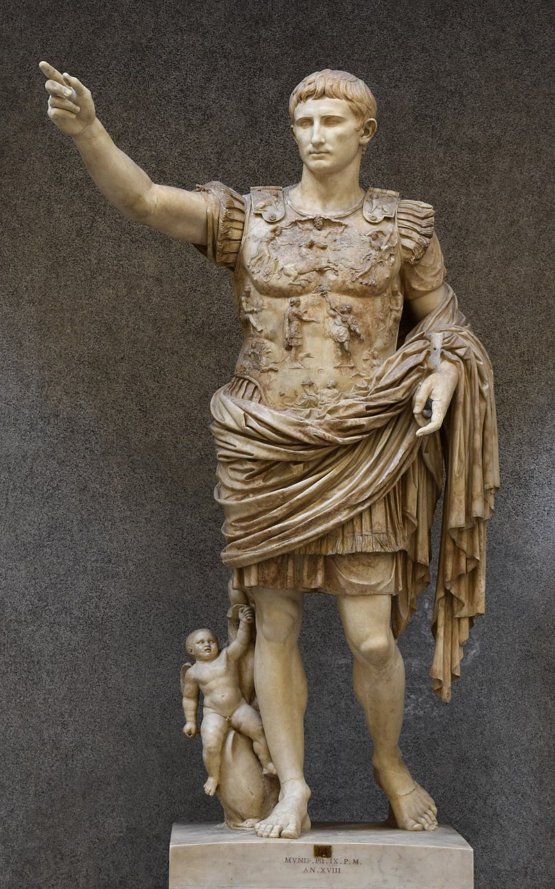

"First Citizen"

“Gaius Julius Caesar Augustus”
The aftermath of Julius Caesar's assassination on March 15, 44 BCE, plunged Rome into chaos and civil war. In the immediate wake, the conspirators expected to restore the Republic, but instead, they faced widespread backlash and a power vacuum.
Caesar’s death led to the rise of his supporters, notably Mark Antony and Octavian (later Augustus), who united against the conspirators. Tensions escalated into a series of civil wars, culminating in the defeat of the conspirators at the Battle of Philippi in 42 BCE.
Ultimately, the power struggle resulted in the end of the Roman Republic. Octavian emerged victorious, becoming the first Roman emperor, marking the transition to the Roman Empire. The assassination underscored the fragility of republican governance and the dangers of concentrated power, shaping the future of Rome for centuries to come.